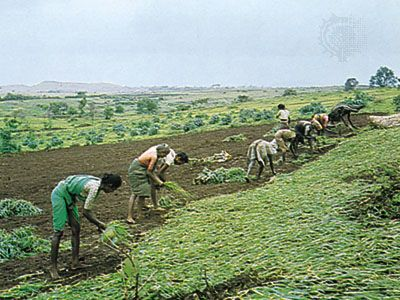

People & Language
People in Satara are known for warm hospitality and community spirit.

People in Satara are known for warm hospitality and community spirit.

Marathi cuisine is deeply rooted here — dishes often use jaggery Many locals enjoy non-vegetarian food, including chicken, fish, and mutton.

celebrates many Festivals with great enthusiasm and local flavor
Sitmai Yatra:held on Makar sankranti near Chafal a large gathering of women offering prayers and celebrating together with traditional rituals.

Satara culture is also shaped by its rich heritage sites and Religious location

Satara was once the capital of the Maratha Empire and retains a strong sense of historical pride